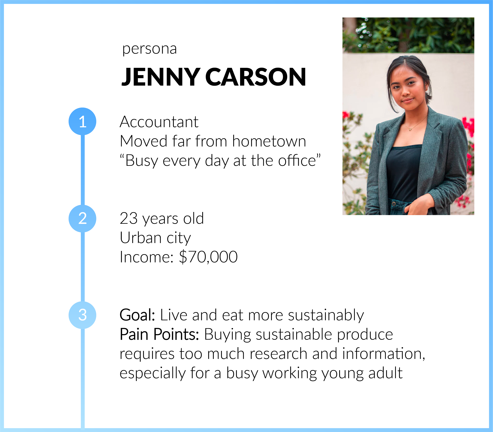
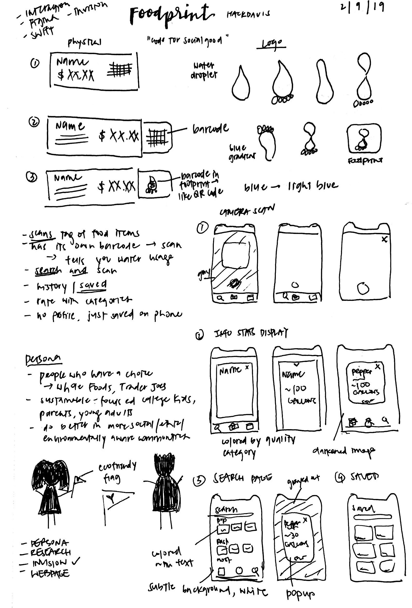
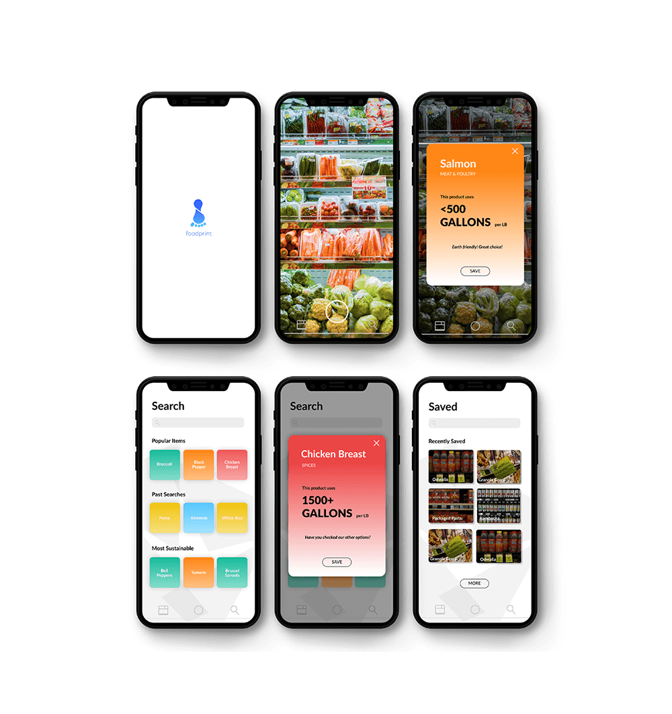

foodprint.
Celina Leong, Minhee Son, June Kang, Cynthia Chen
--------- Introduction
What is this project about? What should our group design do? In a brief summary, which needs or goals are we trying to meet?
Water foodprint aims to raise awareness of water consumption through an innovative and visually eye-catching app. With a simple, eye-catching, and clear design, people of all age—from adults to kids—can see and gain an understanding of the amount of hidden water in certain produce. We provide an easy, convenient way for people to implement small changes in their everyday life!
--------- Identifying Needs
What are some needs of the audience in relation to water? What research have we made on the topic of water conservation?
After brainstorming, we concluded that for third-world countries, the problem lies primarily in water transportation / access to water and water purification, but these must be solved with low-cost and innovative solutions.
For first-world countries, the problem lies primarily in water filtration, water conservation, and our water-related environmental footprint.
--------- Background Research
After filtering ideas, our group decided to focus on water conservation through an agricultural aspect.
We often associate water conservation with cutting back on showers, gardening, and other examples, but it’s important to note that the food we eat also uses gallons of water to grow. Here, California grows “nearly half of all US fruits, veggies, and nuts”, that we are “on track to experience the driest year in the past half millennium” (motherjones). Fruits, nuts, and vegetables such as broccoli, almonds, and lettuce are accountable for the loss in water—so much, that farms use about 80% of the state’s developed water (water from its natural source).
For example,
1 lb of almond: 1,929 gallons of water used
1 lb of broccoli: 34 gallons of water used
1 lb of rice: 299 gallons of water used
1 lb of tofu: 302 gallons of water used
After all this research, this is what we concluded!
--------- Our Audience
Who is our audience?
Because our design primarily is a grading system that indicates roughly how many liters of water went into the production of the specific product, our overall target audience are grocery store customers, specifically people who are looking to be environmentally sustainable.
--------- Initial Sketches
Various hand-drawn sketches are shown below.
--------- Digital Prototype
Using Invision and Figma, we drew up various protoypes showcasing the user flow, as well as the specific UI in each page.
--------- The Final Product
Foodprint is an app that addresses the sustainability issue of water usage in the products we consume.
By scanning the barcode attached to the price tag of grocery store items, the app displays how much water it takes to provide the produce. Foodprint involves a built-in water grading system—these indicate roughly how many liters of water went into the production of a specific product. We inform customers of how much hidden water is in what they buy, which in turn encourages them to compare across brands and choose a water-wiser option. By simply presenting facts to our audience, we can tackle the issue of water over-consumption through the small step of awareness.
Check out our demos and code below!
YoutubeInvision
Figma
Github (App)
Github (Site)